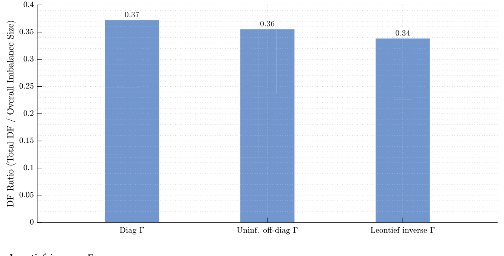
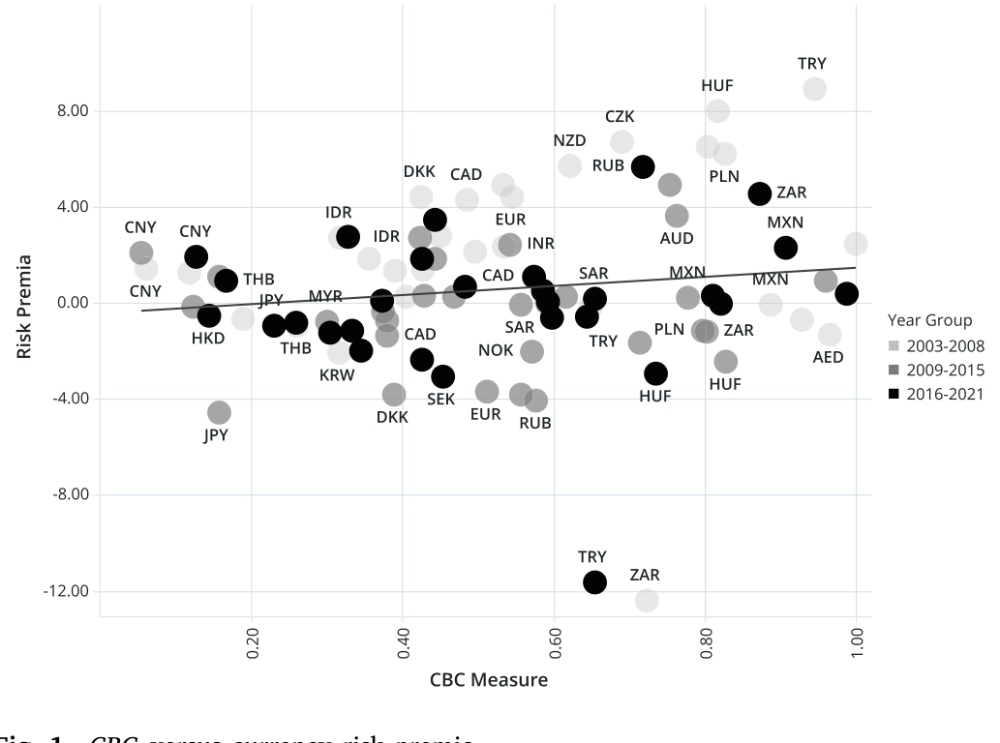
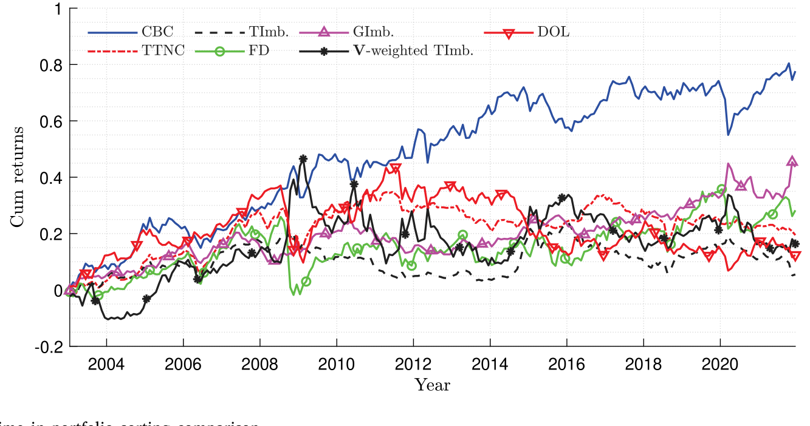
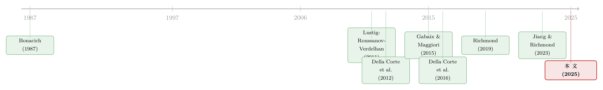
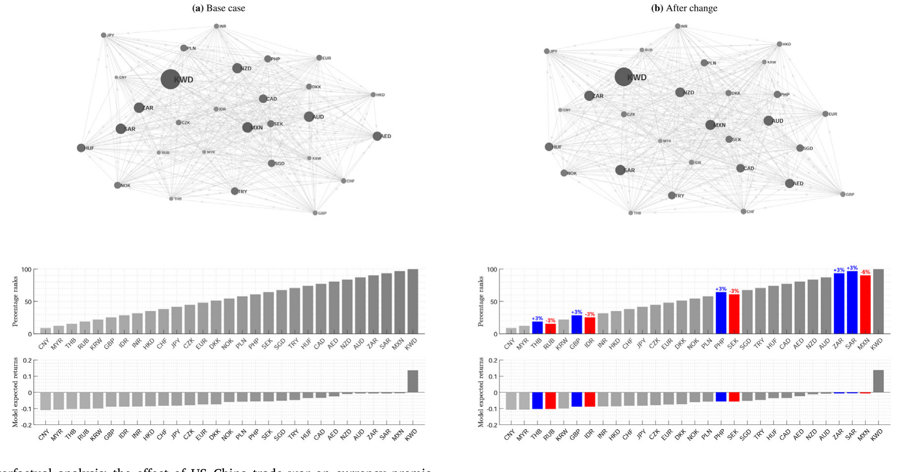

你的货币贵不贵，要看你在贸易网络里坐第几排
本文读的是 Hou, Sarno & Ye (2025, Journal of Financial Economics)：他们把一个「网络」结构塞进 Gabaix & Maggiori (2015) 的汇率理论里，用贸易失衡网络的「莱昂蒂夫逆中心性」刻画金融中介资产负债表的复杂度，构造出一个叫 CBC 的货币特征。按 CBC 给货币排序做多空，年化夏普比率高达 0.65——比按总贸易网络中心性、按个体失衡规模、甚至按经典套息交易排序都更高；而且这份可预测性，现有的货币因子和中介资产定价因子都解释不掉。
1 一个理论与实证「错位」的故事
先讲一个外汇资产定价里说了很多年的老问题：一国的对外失衡，能不能预测它货币未来的超额收益？
直觉上是能的。一个常年逆差的国家，得不断从外部融资，它的货币里应当含着一份「风险补偿」——你愿意持有它，是因为它将来要给你更高的回报。Della Corte, Sarno & Sestieri (2012) 和 Della Corte, Riddiough & Sarno (2016) 把这个直觉做实了：用一国的净逆差（net deficit）作为风险特征给货币排序，确实能挖出一个显著为正的「失衡风险因子」(imbalance risk factor)。
但这里藏着一个一直没人正面处理的「错位」。
首先，理论那一头是怎么讲故事的？最有影响力的那套，是 Gabaix & Maggiori (2015) 的「国际流动性与汇率动态」模型。它的世界里只有两个国家：逆差国和盈余国。金融中介（financiers）替市场承接货币风险——买入逆差国货币、卖空盈余国货币——但他们的风险承担能力是有限的。为了诱使中介接盘，逆差国货币必须当期贬值、并被预期未来升值，用这份升值去补偿中介承担的风险。漂亮、干净，但它是个两国故事。
接着，一个自然的问题是：实证那一头呢？实证全是在多国的横截面里做的——几十种货币一起排序。于是大家默认了一件事：两国之间的双边关系，可以「无成本地」推广到多国。可这个默认，真的成立吗？
作者的回答是：不必然成立，而且，恰恰是这个被忽略的多国结构里，藏着新东西。当你只盯着「一个国家自己的逆差有多大」，你看不见一件事——A 国对 B 国的逆差，会顺着贸易链条在 C、D、E 国激起一连串的盈余与逆差。这些间接关系在两国框架里根本不存在，却真实地改变着中介的资产负债表。
2 把「网络」塞进金融中介的资产负债表
这就是这篇论文真正关键的一步：把一个贸易失衡网络 (trade imbalance network) 显式地写进 Gabaix & Maggiori (2015) 的框架，让金融中介有限的风险承担能力，成为这张网络邻接矩阵的函数。
为什么是中介的资产负债表？作者的逻辑链条是这样的：从中介的视角看，一国的净逆差（盈余）就是一个投资机会——它可以在这个国家的货币上建立多头（空头）头寸，而这必须由在别国货币上的反向头寸来对冲平衡。多头增加了中介的「外部投资选项」(outside investment options)，空头则减少它。于是，一国货币能给中介提供多少投资选项，不只取决于它自己的逆差，还取决于它的逆差在网络里激起的、别国的盈余与逆差——也就是它和其他国家在全球贸易失衡网络里有多「近」。
中介资产负债表越复杂，他承接风险的能力越受限，要的补偿就越高。问题是：「复杂度」怎么量化？
这正是「中介资产定价」(intermediary asset pricing) 这条线的核心关切——资产的价格不取决于代表性消费者，而取决于给市场做市的那群中介有多大的风险承受能力。关于中介视角如何重塑资产定价，可参见《股票，真的是中介「无关」的资产吗？》与《无风险市场里的风险厌恶：是谁给做市商系上了「风险限额」这根绳》。
3 模型：用莱昂蒂夫逆把「间接关系」一次数清
论文的理论部分是个两期模型。设有 \(t=0,1\) 两期、\(n\) 个国家。定义 \(x^i_t\) 为国家 \(i\) 在 \(t\) 期相对美元（USD）的双边汇率，\(x^i_t\) 上升表示 \(i\) 国货币对美元升值；美国是「基准国」(primary country)，记为国家 1，两期都归一化 \(x^1_t=1\)。两期的全球贸易失衡网络由 \(n\times n\) 的邻接矩阵 \(\mathbf{A}_t\) 刻画——注意，这是一张有向网络：边上装的是双边贸易逆差（出口减进口），而不是双边贸易总量。
在 Gabaix & Maggiori (2015) 的基础上，作者证明：即便加进网络结构、并允许中介有限的风险承担承诺成为邻接矩阵的函数，货币溢价的线性定价函数依然在均衡中成立——预期货币超额收益可以写成各国净逆差的线性函数，而那个系数，正好捕捉了中介的「外部投资选项」。均衡通过一个递归优化里的不动点问题求解。
那么，怎么把「一国在网络里的位置」压缩成一个数？答案是网络科学里的老朋友——莱昂蒂夫逆 (Leontief inverse)，它和 Katz–Bonacich 中心性 (Bonacich, 1987) 紧密相连：
这个幂级数展开把整套直觉讲得透亮：\(\mathbf{A}\) 是「我直接和谁有失衡」，\(\mathbf{A}^2\) 是「我的对手又和谁有失衡」，\(\mathbf{A}^3\)、\(\mathbf{A}^4\)……一路把越来越长的间接路径都算进来。把它们全加起来，就得到一个国家在整张失衡网络里的总影响力。这正是两国模型永远算不出来的那部分——间接关系。
有了中心性，作者再把它和汇率收益的方差–协方差矩阵揉到一起，构造出本文的主角：基于中心性的特征 (Centrality Based Characteristic, CBC)。模型里有两个关键参数，分别度量「网络中心性」与「方差–协方差」对中介有限风险承担承诺的贡献——后文记作 \(w\) 和 \(\alpha\)，它们可以被校准、从而直接检验「网络中心性确实在个体净逆差之外解释了货币横截面」这一假设。

Figure 2: Risk reduction effect of the Leontief inverse 𝛤
4 识别：先在样本内校准，再拿到样本外去赌
这里要特别表扬一下作者在「实证纪律」上的克制。
最容易被质疑的，就是这两个参数 \(w\)、\(\alpha\) 是不是「事后挑出来让结果好看的」。作者的做法是：先用 1995–2002 年的训练子样本校准这两个参数，并验证它们在控制了净逆差之后显著异于零；然后把参数固定下来，拿到样本外去为每种货币构造 CBC，再据此做组合排序和正式的资产定价检验。
换句话说，排序时用的 CBC，只依赖于排序时点之前可得的信息。作者还做了一个「递归更新」版本——随新信息到来不断更新校准参数——结论几乎完全一样，因为这两个参数本身在时间上相当稳定。这就堵住了「数据窥探」(data snooping) 这条最常见的攻击线。
数据这边：样本是 41 种货币、1995–2021 年。双边贸易数据来自 UN Comtrade Database，即期与远期汇率来自 Thomson Reuters Datastream。欧元区被聚合成一个「区域」来处理。观测单位是「货币×时间」。
5 主要结果：真正起作用的，是「邻居」
先看一张能把全文直觉一句话讲完的图。把 41 种货币各自的 CBC（横轴）和它们的平均年化风险溢价（纵轴）画成散点——

Figure 1: CBC versus currency risk premia
如图 1 所示，关系清清楚楚地向上倾斜：CBC 高的国家（比如墨西哥、新西兰），货币溢价高；CBC 低的国家（比如日本、泰国），货币溢价低。于是反转出现了：决定一国货币贵不贵的，与其说是它自己逆差的绝对大小，不如说是它在整张失衡网络里坐第几排。
把这个直觉做成策略：按 CBC 从低到高分组，组合收益单调递增；做多最高 CBC 组、做空最低 CBC 组的「高减低」组合，年化夏普比率 0.65。这个数字高于按 Richmond (2019) 总贸易网络中心性 (TTNC) 排序、按 Della Corte et al. (2016) 个体失衡 (GImb) 排序、以及本样本里经典套息交易 (carry) 所能得到的夏普比率。更要紧的是：现有货币因子，以及 He & Krishnamurthy (2013)、He et al. (2017)、Adrian et al. (2014) 这些中介资产定价因子，都无法吸收掉 CBC 因子——它装的是不一样的信息。

Figure 5: Cumulative returns over time in portfolio sorting comparison
那么这份预测力到底从哪来？模型允许把货币溢价拆成三块：总失衡 (total imbalance)、个体重要性 (individual importance)、以及邻居重要性 (neighborhood importance)。作者做了一个方差分解，结论非常干脆：邻居成分解释了横截面货币溢价约 68% 的总变动。这一个数字，就是这篇论文为「把两国理论扩展到多国」所交出的最硬的答卷——网络结构不是装饰，它是主菜。
6 和 Richmond (2019) 到底差在哪？
聪明的读者读到这儿一定会问：Richmond (2019) 不是早就把「贸易网络中心性」和货币溢价连起来了吗？这篇有什么不同？
差别是根本性的，有三点：
其一，网络不一样。Richmond 用的是双边贸易总量（出口加进口），是一张无向网络；本文用的是双边贸易逆差（出口减进口），是一张有向网络。
其二，机制不一样。Richmond 是个完全金融市场下的一般均衡，驱动力是各国对全球消费增长冲击的异质暴露——中心国货币在坏时候升值（消费篮子相对涨价）。本文是不完全金融市场，驱动力是金融中介的风险承担能力——中心国货币当期贬值、未来才升值。
其三，因此符号都反了。Richmond 的因子组合是「外围减中心」(Peripheral minus Central)，本文是「高 CBC 减低 CBC」；作者明确预测、并在数据里看到，CBC 与 Richmond 的中心性特征负相关。一句话：同样讲「贸易网络与货币」，一个走的是消费风险，一个走的是中介约束，机制南辕北辙。
7 文献脉络
把这条线索捋一捋，能更清楚这篇文章站在哪儿。
最上游是两支并行的传统。一支是货币横截面资产定价：Lustig, Roussanov & Verdelhan (2011) 用远期贴水排序找到了汇率里的「斜率」因子，Menkhoff et al. (2012) 把动量、Colacito et al. (2018) 把宏观增长风险陆续接了进来；Verdelhan (2018) 则指出双边汇率的变动很大一部分由共同因子驱动。另一支是对外失衡这条实证线：Della Corte, Sarno & Sestieri (2012) 到 Della Corte, Riddiough & Sarno (2016)，把「个体净逆差」做成了货币风险因子。

理论那头，Gabaix & Maggiori (2015) 的不完全金融市场 + 有限套利中介，是这篇文章的母体。而把「网络」引入货币定价，则有 Richmond (2019) 用消费风险打的样、Lustig & Richmond (2020) 与 Jiang & Richmond (2023) 对国际因子结构的刻画。本文的位置很明确：第一个把网络结构引入 Gabaix–Maggiori 框架、用莱昂蒂夫逆中心性刻画中介资产负债表复杂度的工作，并由此把「失衡—汇率」的两国理论真正扩展到多国。网络中心性那一脉的数学工具，则一路追溯到 Bonacich (1987) 的中心性家族与 Simonovits (1975) 对莱昂蒂夫逆的讨论。
（关于「共同因子」如何在国际市场里被定价、又如何不被定价，可参见《一起涨跌，不等于一起被定价：国际国债里那条「被付了钱」的暗线》；关于贸易/销售版图如何反过来塑造货币层面的选择，可参见《你的债，说哪国话？》。）
8 一个框架的额外用处：当贸易战与制裁顺着网络扩散
如果说前面是「这个特征能赚钱」，那论文最后的反事实分析 (counterfactual analysis) 想说的是「这个框架能讲清现实」。
作者拿框架去模拟了两件大事：2018–2019 年的中美贸易战，和 2022 年针对俄罗斯的国际制裁。结论很有意思：这两件事对货币溢价的冲击，远不止落在直接当事国身上——它们顺着贸易失衡网络一路传导，把许多看似毫不相干的第三国货币也卷了进去。这恰恰印证了全文的母题：在一张相互联结的网络里，没有谁是孤岛；国际事件的链式效应，需要一个像本文这样的量化框架才数得清。

Figure 8: Counterfactual analysis: the effect of US–China trade war on currency premia
9 评论与延伸（Q&A + 研究方向）
（a）几个可能的疑问
Q：CBC 和「个体净逆差」到底有什么本质区别？不就是给逆差加权吗？
区别在于「加权」用的是整张网络的间接路径，而非某个外生权重。个体净逆差只看一国自己；CBC 通过莱昂蒂夫逆把「你的对手的对手……」所有阶的失衡链接一次性加总。方差分解里邻居成分占
68%，正说明真正起作用的是这部分间接结构，而不是个体规模本身。
Q：参数 \(w\)、\(\alpha\) 是不是事后挑出来让夏普好看的？
作者的防线是时间切割：参数只在 1995–2002 训练子样本里校准，固定后拿到样本外构造 CBC、排序。递归更新版本结论一致，因为参数本身相当稳定。这比「全样本拟合再回测」要干净得多。
Q：年化夏普 0.65 看着不算惊人，凭什么说它「新」？
「新」不在数值高低，而在信息正交：CBC 因子无法被既有货币因子（套息、动量、价值、个体失衡）和中介资产定价因子（He–Krishnamurthy、He et al.、Adrian et al.）吸收。它捕捉的是一个之前没被定价进去的维度——网络位置。
Q：为什么 CBC 和 Richmond (2019) 的中心性符号相反，这不矛盾吗？
不矛盾，恰恰是机制不同的必然结果。Richmond 走消费风险，中心国货币在坏时候升值；本文走中介风险承担，中心国货币当期贬值、未来升值。两套理论的「中心」定义（无向总贸易 vs 有向失衡）也不同，符号自然反过来。
Q：贸易数据是年度、低频的，怎么撑得起月度货币策略？
这是个真问题。失衡网络变化慢，CBC 大部分是低频、缓变的信号，所以它更像一个「慢变的风险特征」而非高频择时信号。好处是稳定、不易被数据窥探；代价是它对突发的、网络尚未反映的冲击反应滞后——反事实分析其实就是在补这块短板。
Q：用美元作基准国（country 1）会不会影响结论？
模型对美国做了归一化处理（\(x^1_t=1\)），收益也是从美国投资者视角度量的。这是货币资产定价的标准做法，但确实意味着 CBC 的「中心性」是相对于以美元为枢纽的体系而言的；换一个 numéraire 国家，网络的中心排序会不会重排，是值得追问的稳健性。
（b）几个可能的研究问题与提案
- 把失衡网络换成「外资持有人网络」来定价主权债
- 【经济故事】本文已发现：CBC 越高的国家，本国金融中介持有的本国未偿债务越少（即更多被外资持有）——这正是「风险承担能力低」的证据。那么能否反过来，用主权债的跨境持有网络直接构造中心性，去预测主权信用利差或国债超额收益？外资持有人在坏时候的撤离，本身就是流动性冲击的传导渠道。
-
【可行性】中。数据上可用 Coppola et al. (2021) 重绘的跨境资本流向、或各国 IIP / 国际清算银行数据；识别上可借鉴本文「训练样本校准 + 样本外检验」的纪律。难点是持有数据频率低、且税收天堂导致的「绕道持有」会污染网络。
-
CBC 与公司债信用利差：网络风险会不会渗到企业层面
- 【经济故事】若一国货币溢价含着中介风险承担的补偿，那么该国企业（尤其有货币错配的）发行的美元债，利差是否也随 CBC 同向移动？这把汇率层面的网络风险接到了信用市场。
-
【可行性】中。需要 TRACE / Refinitiv 的新兴市场美元公司债数据，按发行国 CBC 分组。识别上要小心剥离主权风险与汇率风险，可控制主权 CDS。doable，但干净的因果较难。
-
反事实框架的「预测式」检验
- 【经济故事】论文的贸易战/制裁反事实是事后模拟。能不能把它做成事前的：在重大贸易政策公告日，用框架预测哪些第三国货币会被波及，再去事件窗口里检验这些货币的真实异常收益？
-
【可行性】高。事件研究 (event study) 方法成熟，政策公告日可考；难点是公告的「意外成分」难以度量，且网络传导有时滞，需要较长的事件窗口。
-
变量「方差–协方差」那一半的独立贡献
- 【经济故事】CBC 同时用了网络中心性和汇率方差–协方差矩阵。这两块各自贡献多少？参数 \(\alpha\)、\(w\) 的相对大小随时间怎么变（图 3、图 6 已有线索）？在高波动时期，是不是协方差那一半主导了定价？
-
【可行性】高。完全在论文现有数据和框架内即可做，属于「把已有结果再切细」的延伸，最容易上手。
-
流动性视角：CBC 高的货币是不是也更「难做市」
- 【经济故事】既然 CBC 与中介风险承担能力负相关，那高 CBC 货币是否在外汇市场上买卖价差更宽、对订单流冲击更敏感？这把「网络中心性」和「市场微观流动性」直接对接。
- 【可行性】中。需要 EBS / Refinitiv 的外汇买卖价差或订单流数据（获取门槛较高），但识别逻辑清晰，可与 CBC 排序直接交叉。
10 我的判断
这篇文章最让我欣赏的，是它把一个「方法论的错位」——理论两国、实证多国——升级成了一个可量化、可赚钱、可解释现实的贡献。莱昂蒂夫逆中心性这个工具用得恰到好处：它不是为了炫技才引网络，而是因为「中介资产负债表的复杂度」本来就该由间接连接来定义。68% 这个方差分解数字，是全文最有说服力的一锤。
但有几处识别上的隐忧值得后续盯着。其一，贸易失衡网络是慢变、年度的，而货币收益是高频的；CBC 的可预测性究竟来自「网络位置」这个结构性因素，还是部分来自与之相关、但未被剥离的慢变宏观状态（比如新兴市场总体风险偏好），需要更强的控制来分离。其二，参数虽在训练样本校准，但「校准」终究比「估计」给了研究者更多自由度，我希望看到对 \(w\)、\(\alpha\) 设定的更系统的稳健性边界。其三，反事实分析目前是描述性的事后模拟，若能做成事前的、有真实事件窗口对照的检验，这个框架的「现实解释力」会硬气得多。
下一步我最想看到的，是把这套中心性逻辑从汇率推到信用市场和外资持有人：如果中介的风险承担约束真的顺着网络传导，那它不该只在货币溢价里留痕，更该在跨境持有的主权债和公司债利差里留痕。那才是真正检验「网络风险是不是一个普适的定价维度」的地方。
参考文献
- Bonacich, P. (1987). Power and centrality: A family of measures. American Journal of Sociology 92(5), 1170–1182.
- Colacito, R., Croce, M. M., Gavazzoni, F., & Ready, R. (2018). Currency risk factors in a recursive multicountry economy. Journal of Finance 73(6), 2719–2756.
- Della Corte, P., Riddiough, S. J., & Sarno, L. (2016). Currency premia and global imbalances. Review of Financial Studies 29(8), 2161–2193.
- Della Corte, P., Sarno, L., & Sestieri, G. (2012). The predictive information content of external imbalances for exchange rate returns. Review of Economics and Statistics 94(1), 100–115.
- Gabaix, X., & Maggiori, M. (2015). International liquidity and exchange rate dynamics. Quarterly Journal of Economics 130(3), 1369–1420.
- He, Z., & Krishnamurthy, A. (2013). Intermediary asset pricing. American Economic Review 103(2), 732–770.
- Hou, A. J., Sarno, L., & Ye, X. (2025). The trade imbalance network and currency returns. Journal of Financial Economics 172, 104112.
- Jiang, Z., & Richmond, R. (2023). Origins of international factor structures. Journal of Financial Economics 147, 1–26.
- Lustig, H., & Richmond, R. J. (2020). Gravity in the exchange rate factor structure. Review of Financial Studies 33(8), 3492–3540.
- Lustig, H., Roussanov, N., & Verdelhan, A. (2011). Common risk factors in currency markets. Review of Financial Studies 24(11), 3731–3777.
- Menkhoff, L., Sarno, L., Schmeling, M., & Schrimpf, A. (2012). Currency momentum strategies. Journal of Financial Economics 106(3), 660–684.
- Richmond, R. J. (2019). Trade network centrality and currency risk premia. Journal of Finance 74(3), 1315–1361.
- Simonovits, A. (1975). A note on the underestimation and overestimation of the Leontief inverse. Econometrica 43, 493–498.
- Verdelhan, A. (2018). The share of systematic variation in bilateral exchange rates. Journal of Finance 73(1), 375–418.